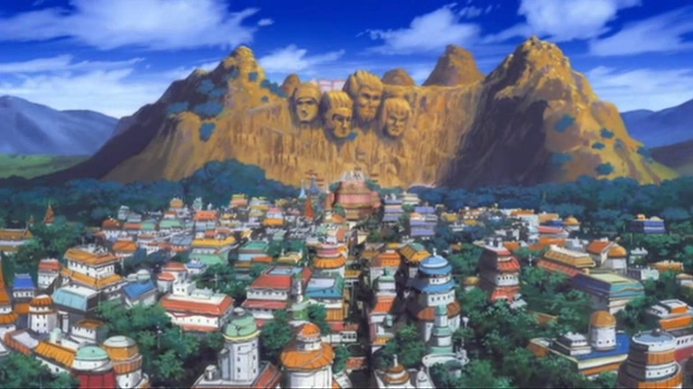
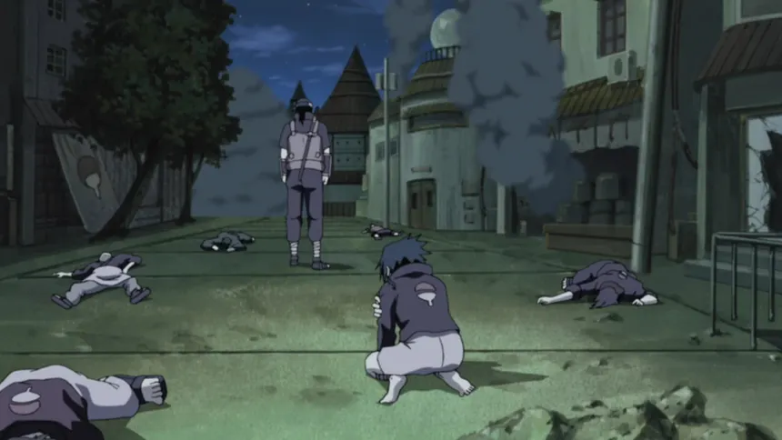

Aldea De La Hoja
Esta es la Aldea De La Hoja una de las Aldeas del pais del Fuego

Estos son algunos de los lugares mas iconicos de la Aldea De La Hoja continuacion conozca un poco mas de cada uno
Esta es la Aldea De La Hoja una de las Aldeas del pais del Fuego

Aqui se toman Ordenes/Misiones del Hokage

Academia a la que asisten los niños de la Aldea

Lugar donde asesinaron a casi todo el clan Uchiha
